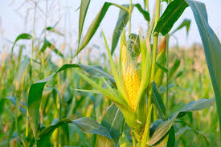

1. Land Selection: Choose a well-drained, fertile soil with good organic matter content. Corn prefers slightly acidic to neutral soil with a pH of 6.0-7.0. Ensure the land receives adequate sunlight.
2. Variety Selection: Select corn varieties suited to your region's climate, such as sweet corn or field corn. Consult local agricultural experts or your nearest agricultural extension office for recommendations.
3. Soil Preparation: Clear the land of weeds, rocks, and debris. Plow the field to a depth of 15-20 cm (6-8 inches) and then harrow it to create a fine seedbed.
4. Seedbed Preparation: Use a seedbed roller or plank the field to create a firm, level surface. Remove any remaining weeds, rocks, or clumps from the seedbed.
5. Planting: Corn is usually sown in rows or blocks. The recommended planting density varies by variety, but common spacing is about 20-30 cm (8-12 inches) between plants and 75-90 cm (30-36 inches) between rows. Plant corn seeds at a depth of about 2.5-5 cm (1-2 inches), depending on soil conditions and climate.
6. Fertilization: Conduct a soil test to determine nutrient deficiencies and apply fertilizers accordingly. Corn requires nitrogen, phosphorus, and potassium. Apply fertilizers before planting and side-dress with nitrogen during the growing season.
7. Irrigation: Provide consistent irrigation, especially during the critical stages of tasseling and grain filling. Monitor soil moisture to ensure it remains adequate but not waterlogged.
8. Weed Control: Keep the corn field free of weeds, which can compete for nutrients, water, and sunlight. Use pre-emergence and post-emergence herbicides, manual weeding, or mechanical weeders as necessary.
9. Disease and Pest Management: Monitor the corn crop for signs of diseases such as rust or pests like corn borers and aphids. Apply appropriate pesticides or integrated pest management strategies as needed.
